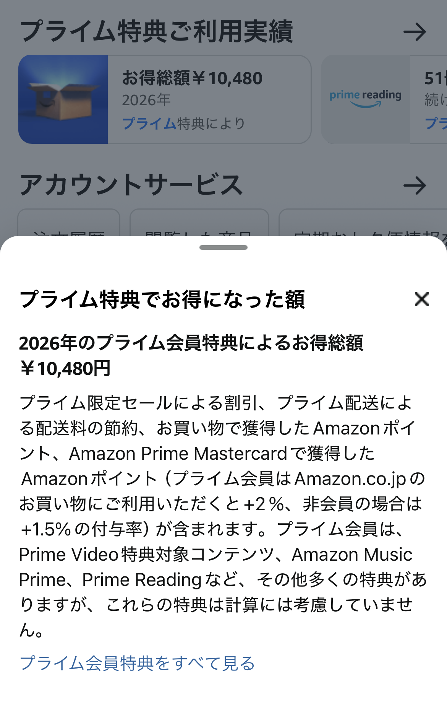

更新日：2026-05-07 ｜ 管理人特製記事
実際の「プライム特典お得額」を公開
添付画像の通り、2026年のプライム会員特典によるお得額は合計10,480円でした。
これは Amazon が自動計算してくれる「プライム特典ご利用実績」に基づく実数値です。
内訳には以下が含まれています：
- プライム限定セールによる割引額
- プライム配送による配送料の節約
- Amazonポイントの獲得
- Amazon Prime Mastercard のポイント（プライム会員は +2%）
なお、Prime Video・Prime Reading・Amazon Music Prime などの「利用価値」は金額換算に含まれていません。
つまり、実際の体感価値はこの金額以上になります。
一般論：Amazonプライムが“元を取りやすい”理由（事実ベース）
Amazonプライムは年間5,900円（月額600円）ですが、以下の理由から非常に元を取りやすいサブスクとして知られています。
- 配送料が無料（通常410〜450円）
月に2〜3回注文するだけで元が取れる計算。
- お急ぎ便・日時指定便も無料
通常510〜550円のサービスが無料になる。
- プライムデー・ブラックフライデーの割引が強力
家電・日用品・食品などで数千円単位の割引が発生しやすい。
- Amazon Prime Mastercard のポイント優遇
プライム会員は Amazon.co.jp での買い物が +2%（非会員は +1.5%）。
- デジタル特典の価値が高い
Prime Video、Prime Reading、Amazon Music Prime などが追加料金なしで利用可能。
これらは Amazon が公式に提供しているサービスであり、特許技術（物流最適化システム・配送ネットワーク管理アルゴリズムなど）によって
他社が真似しにくいコスト構造を実現している点も特徴です。
実際に得したポイントの話：コンビニ決済（セブンイレブン）でもポイントが付く
Amazonでの支払い方法として、セブンイレブンでのコンビニ決済を「クレジットカード払い」にすると、
Amazon Prime Mastercard のポイントが通常通り付与されます。
つまり：
- Amazonで注文 → 支払い方法を「コンビニ払い」に設定
- セブンイレブンで支払う → クレジットカードで決済
- Amazon Prime Mastercard のポイントが付く
これは「コンビニ払い＝現金のみ」という誤解を避けられる裏技で、
実際に Amazon 側のポイント履歴にも反映されます。
まとめ：Amazonプライムは“使うほど得する”サービス
今回の実績では年間10,480円の得でしたが、
配送回数・セール利用・カード決済の組み合わせ次第で、さらにお得額は増えます。
特に以下の人は、ほぼ確実に元が取れます：
- Amazonで月2回以上買い物する人
- プライムデー・ブラックフライデーを利用する人
- Prime Video をよく見る人
- Amazon Prime Mastercard を使う人
「配送無料＋ポイント＋セール割引」の3つが重なるため、
Amazonプライムはコスパの良いサブスクとして非常に優秀です。